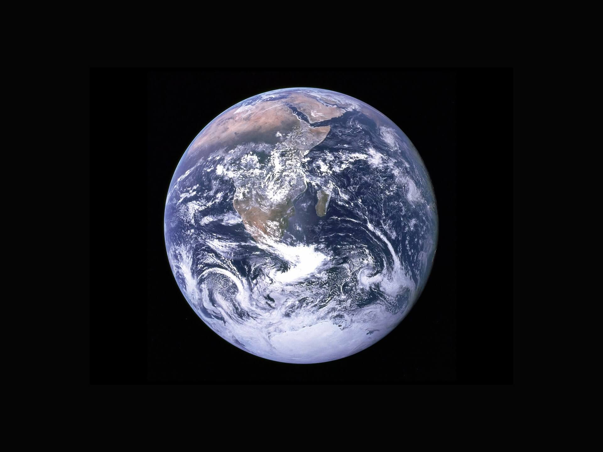

Earth
Description: Earth is the third planet from the Sun in our solar system. It is the only known celestial body to support life, characterized by diverse ecosystems, climates, and geological features. Earth has a breathable atmosphere and is home to a variety of organisms, including humans.
Notable Features: Oceans, continents, diverse landscapes, and a variety of ecosystems.